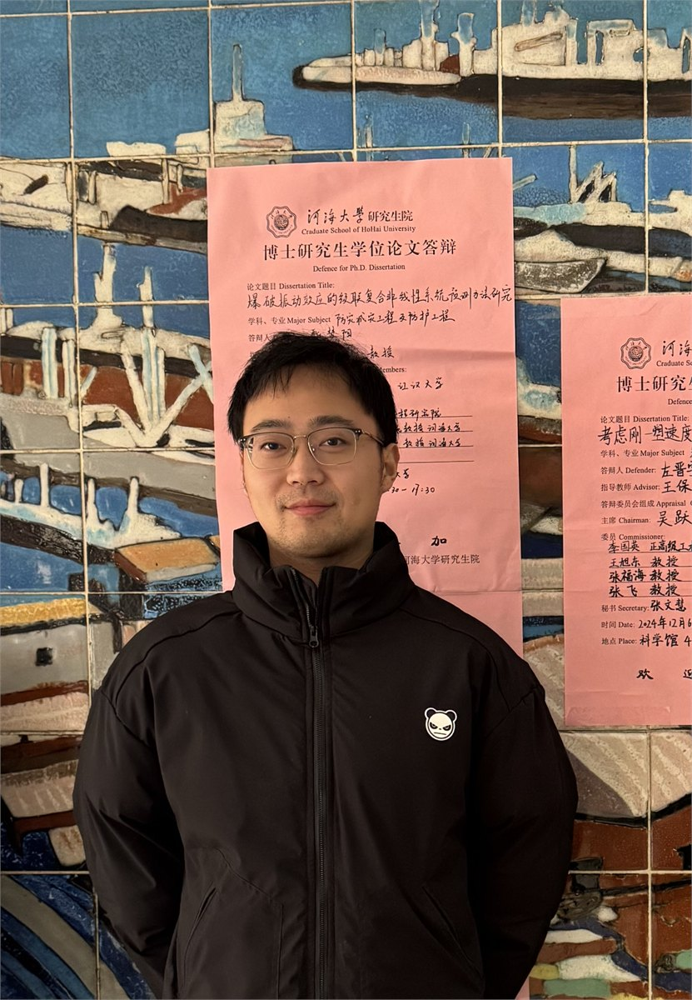
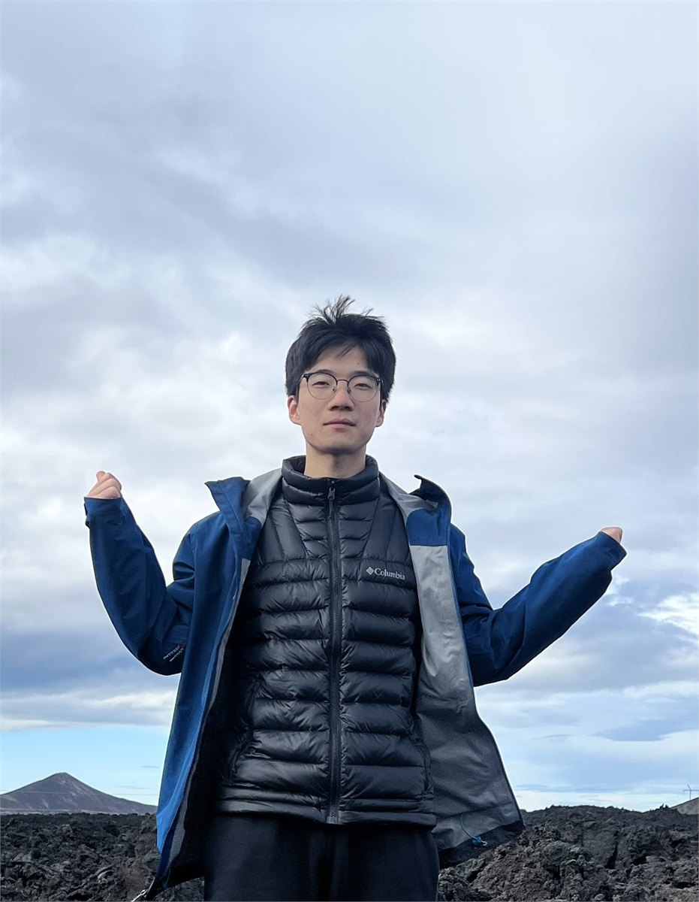
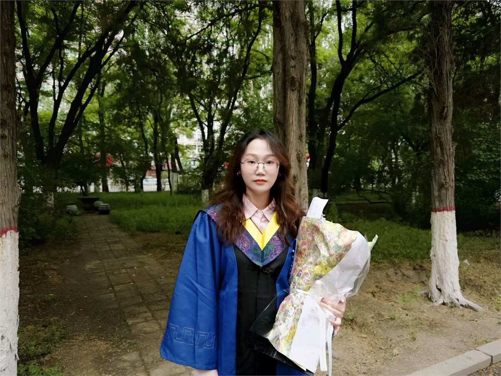
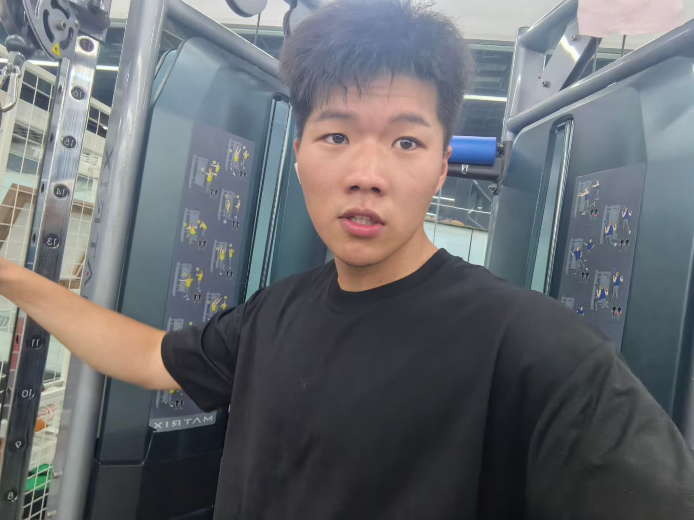
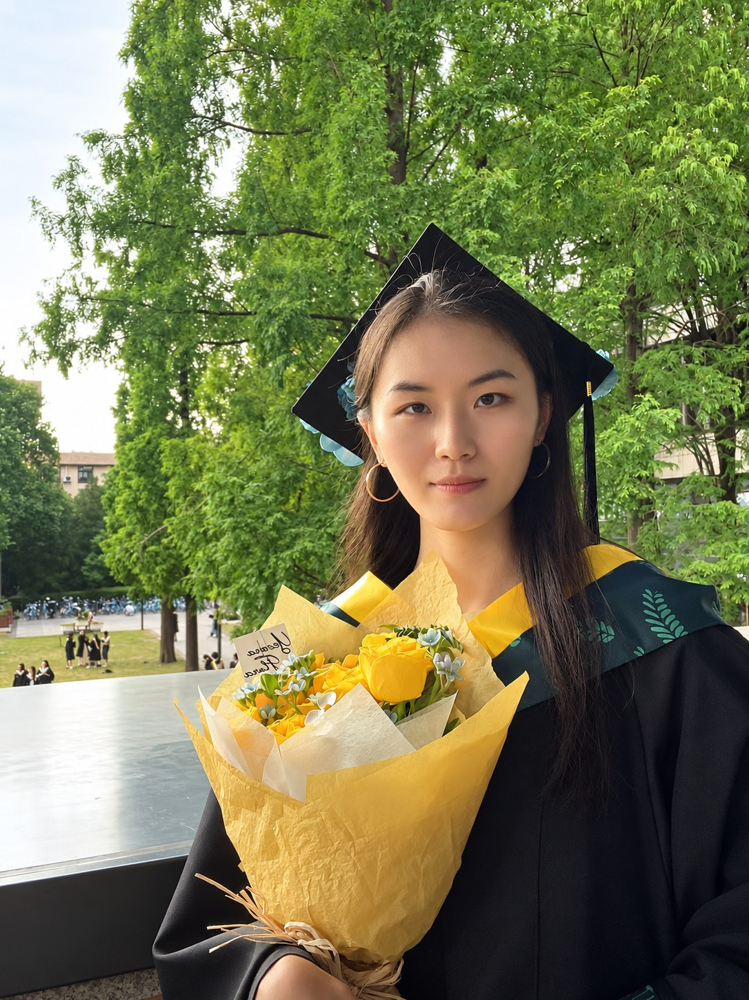

左晋宇
博士后边坡工程与风险评估
Research Team
师生协同、交叉融合，共同推进岩土工程风险治理与灾害韧性防控研究。
01 / Faculty
围绕岩土工程风险分析、边坡灾害预测预警和韧性防控开展科研与人才培养。
教授 · 博士生导师
国家万人计划领军人才，河海大学岩土风险与韧性研究中心主任。主要从事岩土工程风险分析与可靠性控制、边坡工程与滑坡预测预警、地下空间工程安全与岩土灾害韧性防控研究。
查看个人主页02 / Postdoctoral Researchers
与团队师生共同开展岩土工程风险与韧性研究。

边坡工程与风险评估

入选澳门青年学者和江苏省卓越博士后计划。主要从事岩土工程不确定性表征与随机场建模、可靠性分析与风险评估、高效计算方法及智能算法研究。
03 / Current Students
在读研究生积极参与科学研究、工程实践与团队学术交流。
地震边坡稳定性分析、岩土工程物质点法开发、岩土工程多场耦合分析
区域滑坡易发性区划、边坡稳定性分析、岩土可靠度方法、GIS软件开发
地震边坡
基于岩土可靠度理论的公路边坡多级韧性量化与风险分析
岩土数值大变形模拟、岩土高效可靠度计算方法研究

岩石边坡可靠度分析、节理边坡精细化建模
区域滑坡

机器学习
多源信息融合的采空区三维地质建模与灾害预警
机器学习
区域滑坡易发性
地震作用下土体应变软化及屈服加速度演化

岩土大变形模拟、高效可靠度计算、围岩应力以及岩石爆破
边坡失效预测与风险防控

04 / Alumni
记录曾在课题组学习与科研的毕业生，延续团队的学术传承与联络。